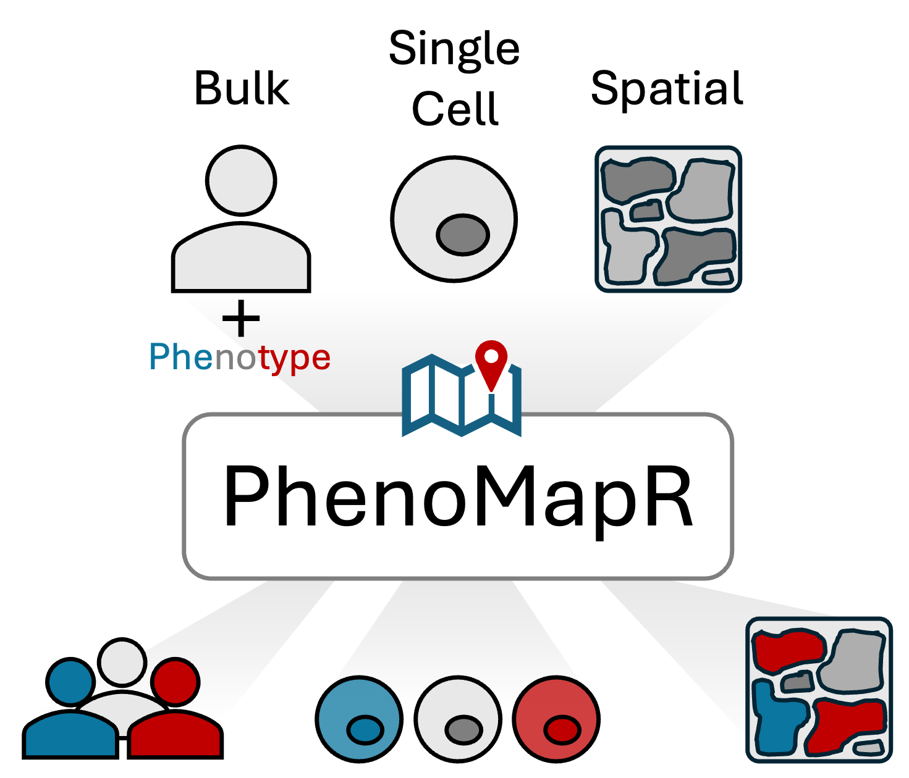

PhenoMapR is a semi-supervised method to map phenotypes associated with bulk gene expression onto single cell, spatial, and bulk transcriptomics data. PhenoMapR nominates and rank-orders samples, cells, and spatial locations associated with gene expression signatures that are correlated with a phenotype of interest (e.g. overall survival).

Installation
# Download PhenoMapR using the following:
if (!require(devtools)) install.packages("devtools")
devtools::install_github("brooksbenard/PhenoMapR")Quick Start
Basic PhenoMapR requirements (if using built-in cancer references):
1. User-provided gene expression input (bulk, single-cell, or spatial). 2. Select a database reference to score against. 3. Select the matching reference cancer type based on the input data cancer type.
# Load PhenoMapR in your R session using:
library(PhenoMapR)
# Score samples in a bulk expression matrix
scores <- PhenoMap(
expression = bulk_matrix, # genes (rownames) x samples (colnames)
reference = "precog", # can be one of precog, pediatric_precog, ici_precog, or tcga
cancer_type = "BRCA" # use list_cancer_types(reference) to see avaliable options
)
# Score single-cell/spatial data
scores <- PhenoMap(
expression = seurat_obj,
reference = "tcga",
cancer_type = "LUAD",
assay = if ("Spatial" %in% names(seurat_obj@assays)) "Spatial" else "RNA",
slot = if ("Spatial" %in% names(seurat_obj@assays)) "counts" else "data"
)